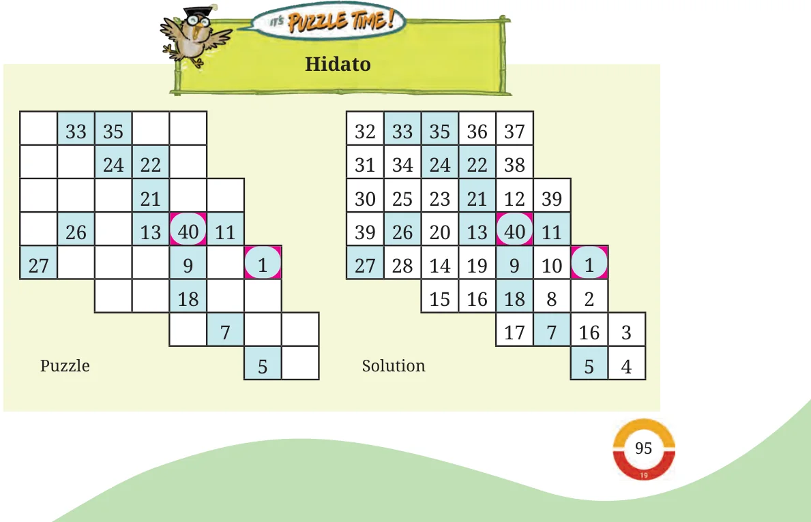

- In this chapter, we learnt procedures to perform decimal multiplication and division.
- For decimal multiplication, we first multiply the multiplier and multiplicand as counting numbers. The number of decimal digits in the product is the total number of decimal digits in the multiplier and multiplicand.
- Division of decimals uses the same procedure, i.e., division using place value (long division), as with counting numbers. The regrouping continues after the Ones place to Tenths, Hundredths, Thousandths, and so on. When the Ones are regrouped to Tenths, a decimal point is placed in the quotient.
- There are decimal divisions where the quotient never ends. After each regrouping and dividing there is always a remainder!

In Hidato, a grid of cells is given. It is usually square-shaped, like Sudoku or Kakuro, but it can also include hexagons or any shape that forms a tessellation. It can have inner holes (like a disc), but it is made of only one piece. Usually, in every Hidato puzzle the lowest and the highest numbers are given on the grid. Your task is to fill the grid such that there is a continuous path of consecutive numbers from the lowest to the highest number. The next number must be in any one of the adjacent cells, including diagonally adjacent cells. The grid comes pre-filled with some numbers (with values between the smallest and the highest) to ensure that these puzzles have a single solution. Try solving the following Hidato puzzles.
25 1 4 6 13 20 4 34 12 14 8 39 30 15 9 31
44 49 28 54 42 50 29 26 56 35 34 25 23